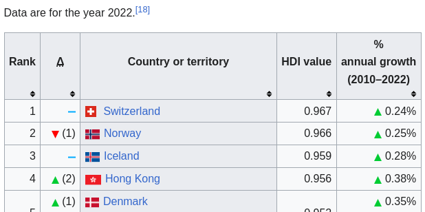

Switzerland
Where we document our search for a position in Switzerland.
Objective
The objective is to secure a contract in Switzerland.
Result
We got the position .
The steps planned so far:
- We have learned about Switzerland.
- We have learned about its economy.
- We have learned which jobs are in demand.
- We have built application profiles to match the demand.
- We have participated in events.
- We have taken interviews.
Context
Switzerland
Switzerland is organized as a confederation:
The Confederation has certain competences provided by the Constitution, such as currency or the army, while the cantons have all competences not attributed, such as police, education, or health.
Switzerland has the highest HDI in the world.

Switzerland is one of the top countries in terms of economic freedom.
Economy
Switzerland's economy is undergoing a significant effort of digitalization, especially for relatively large companies. Five cantons are at the forefront of this transformation.
A digitalization effort
There has been a digitalization initiative for the entire Swiss business federation since at least 2020. There is still significant digitalization work to be done in the vast majority of companies along the following lines:
- Artificial intelligence
- Cybersecurity
- Blockchain
- Digital transformation management
Switzerland ensures its prosperity sustainably and seizes the opportunities offered by digitalization.
Switzerland consistently applies the "digital first" principle to benefit everyone, regardless of gender, age, or origin. It takes advantage of digital transformation so that everyone benefits sustainably. Switzerland is among the most competitive and innovative European countries in terms of digitalization.
Digitalization is important for large companies
Digitalization is important mostly for companies with a turnover over 100M CHF.
Digital technologies are significantly more important for large companies than for small and medium-sized Swiss enterprises.
While one in two companies with an annual turnover of more than 100 million francs attaches great importance to digital technologies, this rate is only 20 percent for very small companies.
32 percent of service providers, 30 percent of industrial companies, and 22 percent of companies in the construction and energy sectors attach great importance to digital technologies for their business models.
Most productive cantons
According to the Federal Statistical Office, the most economically active cantons are:
- Bâle-Ville
- Zoug
- Genève
- Zurich
- Neuchâtel
Job offers
Job boards
Network
My LinkedIn account has over 600 connections. I have received one reply.
Placement agencies
Jobs in demand
These skill sets are in demand:
-
Bioinformatics in Basel
- There is a dedicated Master’s degree. See: MSc Medical Informatics
-
NLP in Zug
- Guaranteed by my network.
-
Blockchain in Zug
- See: economy.zg.ch
As shown by the various job offers.
Research engineer position
I may have a chance for a research engineer position.
Here is an analysis of a job offer:
- Do you love creating innovative solutions for customers?
- We are seeking a passionate Sr Research Engineer who will bring expertise in AI and ML and is interested in building data-driven capabilities that drive transformation.
- As a member of Thomson Reuters Labs you will have a direct impact on our company by helping to create new and innovative capabilities that will delight our customers.
- What does Thomson Reuters Labs do?
- We experiment, we build, we deliver. We support the organization and our customers through applied research and the development of new products and technologies. TR Labs innovates collaboratively across our core segments in Legal, Tax & Accounting, Government, and Reuters News.
- As a Senior Research Engineer at Thomson Reuters Labs, you will be part of a global interdisciplinary team of experts. We hire engineers and specialists across a variety of AI research areas to drive the company’s digital transformation. The science and engineering of AI are rapidly evolving. We are looking for an adaptable learner who can think in code and likes to learn and develop new skills as they are needed; someone comfortable with jumping into new problem spaces; who enjoys directing and supporting the efforts of others.
- Is this you? Come join us!
That is perfect. What else?
In this opportunity as a Senior Research Engineer, you will:
- Develop and Deliver: Applying modern software development practices, you will be involved in the entire software development lifecycle, building, testing and delivering high-quality solutions.
- Build Scalable ML Solutions: You will create large scale data processing pipelines to help researchers build and train novel machine learning algorithms. You will develop high performing scalable systems in the context of large online delivery environments.
- Be a Team Player: Working in a collaborative team-oriented environment, you will share information, value diverse ideas, partner with cross-functional and remote teams.
- Be an Agile Person: With a strong sense of urgency and a desire to work in a fast-paced, dynamic environment, you will deliver timely solutions.
- Be Innovative: You are empowered to try new approaches and learn new technologies. You will contribute innovative ideas, create solutions, and be accountable for end-to-end deliveries.
- Be an Effective Communicator: Through dynamic engagement and communication with cross-functional partners and team members, you will effectively articulate ideas and collaborate on technical developments.
Great, what else?
You are a fit for the Senior Research Engineer if your background includes:
- Essential skills & experience:
- A Bachelors Degree in Computer Science or Related Field
- At least 5 years software engineering experience, ideally in the context of machine learning and natural language processing
- Are skilled and have a deep understanding of Python software development stacks and ecosystems, experience with other programming languages and ecosystems is ideal.
- Can understand, apply, integrate and deploy Machine Learning capabilities and techniques into other systems.
- Are familiar with the Python data science stack through exposure to libraries such as Numpy, Scipy, Pandas, Dask, spaCy, NLTK, scikit-learn
- Take pride in writing clean, reusable, maintainable and well-tested code
- Have a desire to learn and embrace new and emerging technology
- Are familiar with probabilistic models and have an understanding of the mathematical concepts underlying machine learning methods
- Have familiarity with Agile Methodologies.
I check — or have checked — all the boxes. I need to refresh these skills and make public projects since my previous works cannot be disclosed ; or only irrelevant parts.
Preferred skills & experience:
- Experience integrating Machine Learning solutions into production-grade software and have an understanding of ModelOps and MLOps principles
- Demonstrate proficiency in automation, system monitoring, and cloud-native applications, with familiarity in AWS or Azure (or a related cloud platform)
- Had previous exposure to Natural Language Processing (NLP) problems and have familiarity with key tasks such as Named Entity Recognition (NER), Information Extraction, Information Retrieval, etc.
- Can understand and translate between language and methodologies used both in research and engineering fields
- Have been successfully taking and integrating Machine Learning solutions to production-grade software
- Hands-on experience in other programming and scripting languages (Java, TypeScript, JavaScript, etc.)
- Have exposure to cloud computing development (AWS/Azure).
- Have familiarity with Agile Methodologies.
Idem.
Application file
- CV
- a cover letter
- your various work and continuing education certificates (copies)
- a copy of your university or professional diplomas
- any document that can add meaning to your application
CV
- The curriculum vitae should not exceed two A4 pages.
- Name and surname
- Address
- Phone number
- Date of birth
- Nationality
- Professional experience
- Internship periods during training
- Basic education (school, university, professional)
- Language skills
- Computer skills
- Special skills
- Personal interests (hobbies, participation in associations, etc.)
- In Switzerland, great importance is attached to diplomas and work certificates: outline your professional background, avoiding gaps if possible, and indicate which Swiss certificate of completion your diplomas correspond to.
Current profile
This profile represents my profile as is
.
It is composed of:
NLP Resources
The objective is to list resources — e.g. projects and certifications — that increases chances of getting a research engineer position in the NLP domain.
The list of resources is:
- This list has been built using our network and the requirements of various job offers in the field.
- The idea is that a threshold will be crossed after which an appropriate job offer will be found.
- The projects are listed in order: each project adds to the previous one — /i.e./ complexity increases.
- Each project illustrates a maximum of skills.
- Each project is end to end: from development to deployment.
Requirements
The objective is to list the skills required from job offers similar to a research engineer position.
The skills are:
This list has been compiled from various job offers.
Conferences
The objective is to short list the best
conferences.
The list is:
- ACL
- NAACL (the North American-located chapter of ACL)
- EACL (the European-located chapter of ACL)
- EMNLP
- COLING
- AAAI/ICLR/ICML (these concern AI/ML in general, but some NLP papers are accepted)
The list has been found from various sources, 6.861* Quantitative Methods for NLP in particular.
NLP Profile
This profile is tailored specifically for Data Science/NLP positions. It is formed by:
- English CV (PDF)
- French CV (PDF)
- GitHub
- Application file (on demand).
This profile is derived from the current profile. The most important addition are the projects and certifications added to the GitHub profile and application file.
Continuing education
FHNW
ETH Zurich
University of Basel
The bioinformatics specialization is a joint master with ETH Zurich.
Bioinformatics resources
The objective is to list resources — e.g. projects and certifications — that may help me justify a research engineer position in the Bioinformatics domain.
The list of projects and certifications is:
- XXX
This list has been built using our network and the requirements of the various job offers in the field.
Bioinformatics profile
This profile is tailored specifically for Data Science/Bioinformatics positions. It is formed by:
- English CV (PDF)
- French CV (PDF)
- GitHub
- Application file (on demand).
This profile is derived from the current profile. The most important addition are:
- The projects and certifications added to the GitHub profile and application file.
- Additional education in bioinformatics.
Application profiles
In order to match the jobs openings, we have chosen three applications profiles:
They were chosen because the skills sets are in demand, close to ours, and we have an interest in these domains.